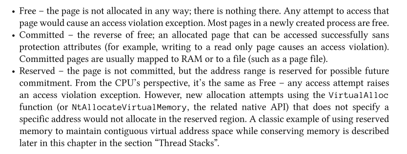

Windows内核编程01|Process
1.1 进程
进程拥有的内容：
- 一个可执行程序。包含用来在进程中执行的原始的代码和数据（PE格式的文件）。
- 一段虚拟地址空间。进程中的代码不管出于何种目的要分配内存时，都从这里分配。
- 一个主令牌。它是一个保存进程默认安全上下文的对象，在进程内执行代码的线程会用到它，除非某个线程通过身份扮演（impersonation）而使用了另一个不同的令牌。
- 一个存放执行对象的私有句柄表。它是保存了执行体对象（executive object）如事件（event）、信号量（semaphore）和文件的句柄。
- 一个或多个执行线程。普通的用户模式进程在创建时具有一个线程，该线程执行经典的main/WinMain函数。没有任何线程的用户模式进程多半是没用的，并且正常情况下会被内核销毁。
- 一个唯一标识（PID）。
1.2 虚拟内存
地址空间从0开始（第一个64KB的地址是不能被分配和使用的），一直增长到进程“位数”和操作系统“位数”限制的最大值。
每个进程都有自己的地址空间，这个地址空间中所得到地址都是虚拟地址，它是与进程密切相关的地址，而不是物理内存中的实际地址。进程中的一块地址空间可能被映射到物理内存中也可能临时存放在文件中（PageFile）。
作为程序员我们没有必要知道，代码将要访问或者执行的地址空间是不是映射到物理内存上，如果是映射到物理内存中CPU则继续执行进行读取操作；如果存放在页面文件中则CPU会触发一个PageFault异常，内存管理器的PageFault处理程序会从适当的文件中读出数据拷贝到RAM中。
内存以页为单位进行管理。
1.2.1 页状态
虚拟内存中的每个页面处于以下三种状态之一：
- 空闲：页面没有被分配过。
- 提交：已提交的页面通常被映射到RAM或者文件中。
- 保留：页面未提交，但保留了地址范围供以后可能发生的提交操作使用。

1.2.2 系统内存
系统内存空间与进程是无关的，此处对应本节开始对虚拟内存的介绍，从0到进程和操作系统限制的最大值之间的虚拟内存为用户空间，此外的空间为系统内存空间。系统空间中的任何地址都是绝对地址而不是相对地址，用户模式访问系统空间地址会导致access violation异常。
系统空间是操作系统内核所在之处，HAL和驱动程序在加载之后也在这段空间内。
1.3 线程
线程是执行代码的真正实体，线程位于进程之内。在线程中最重要的信息如下：
线程常见的状态：
1.3.1 线程栈
每个线程在执行的时候都会有一个线程栈空间用来存放局部变量,函数参数和函数返回地址。所有线程都至少拥有一个位于系统内核空间的栈。如果线程需要更多的栈空间，它会写到GUARD PAGE产生一个异常并被内存管理器处理，使需要的栈空间能够被获得，所以所需要的全部栈内存不用事先全部提交。
1.4 系统服务（系统调用）
当处于用户态的应用程序需要分配内存，打开文件，创建线程等操作就需要用到系统服务了。在下图中的n为系统服务号，通过特殊的CPU指令（x64系统中为syscall，x86系统为sysenter）来实际跳转到内核模式，并跳转到系统服务分发器（system service dispatcher），在分发器中使用EAX的值作为SSDT（System Service Dispatch Table）的索引，跳转至对应的系统服务（系统调用）执行实际的分配内存，打开文件，创建线程等操作。
1.5 系统总体框架
各个模块介绍留坑，后续填
1.6 句柄和对象
Windows内核中提供了多种类型的对象供用户模式进程，内核本身和内核驱动程序使用。这些类型的对象是位于系统内核空间的数据结构，由对象管理器在用户模式还在内核模式代码请求创建。这些对象都位于系统内核空间中用户层代码不能直接访问，所以需要一种间接的访问机制：句柄对这些对象进行获取。
句柄是指向一个表格（句柄表）的入口索引，该表格在进程的基础上进行维护，逻辑上指向驻留在系统空间的内核对象。
句柄的值一般是4的倍数，第一个有效的句柄是4，0永远都不是有效的句柄值。所有的对象都是引用计数的，由对象管理器维护着句柄计数和对象引用总数，只有当引用计数为0的时候，对象才会真正从内存中释放出来。
1.6.1 对象名称
一些类型的对象可以有名称，可以通过Open*函数使用名称打开对象，但是比如进程和线程就没有名称，进程和线程则是靠进程/线程标识符去打开对应对象，需要注意的是，文件是无名称对象，文件的文件名不是 对象名称。名称空间的层次结构可以使用WinObj工具查看。
当然通过WinObj能看到的并不是所有存在的对象，而是所有使用名称创建的对象。
对于前文提到每个进程中都有一个私有的指向内核对象的句柄表，我们可以使用ProcessExplorer的ViewHandles功能查看对应进程的私有句柄表。
- 原文作者：Binean
- 原文链接：https://bzhou830.github.io/post/20191227WindowsKernelPrograming01Process/
- 版权声明：本作品采用知识共享署名-非商业性使用-禁止演绎 4.0 国际许可协议进行许可，非商业转载请注明出处（作者，原文链接），商业转载请联系作者获得授权。